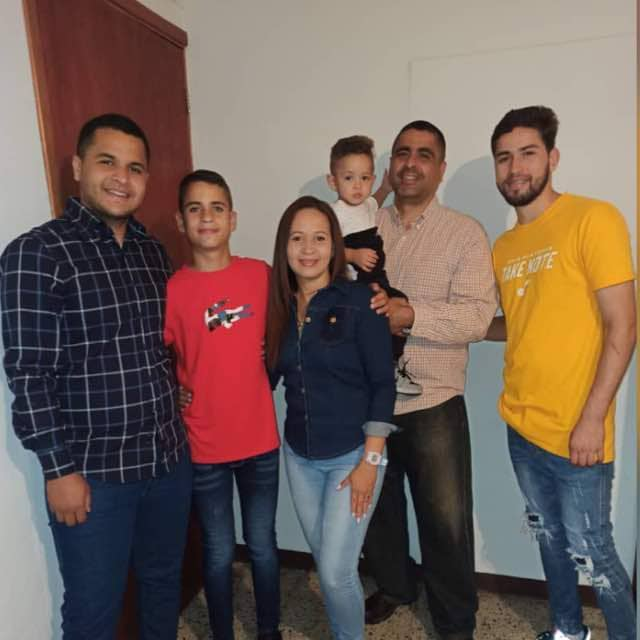

Wilker Pacheco
WDD230 Assigment Portal

LESSON 01:
Assigment portal
LESSON 02:
Design Principles
LESSON 03:
Website Planning
LESSON 04:
Preston Town Page
LESSON 05:
Preston Town Page II
LESSON 06:
Responcive Images and Fonts
LESSON 07:
Gallery Page
LESSON 08:
Storm Center Page
LESSON 09:
Weather Site Homepage
LESSON 10:
Preston Weather Api
LESSON 11:
Weather site
LESSON 12:
Final Project
LESSON 13:
Final Project II
LESSON 14:
Final Project III